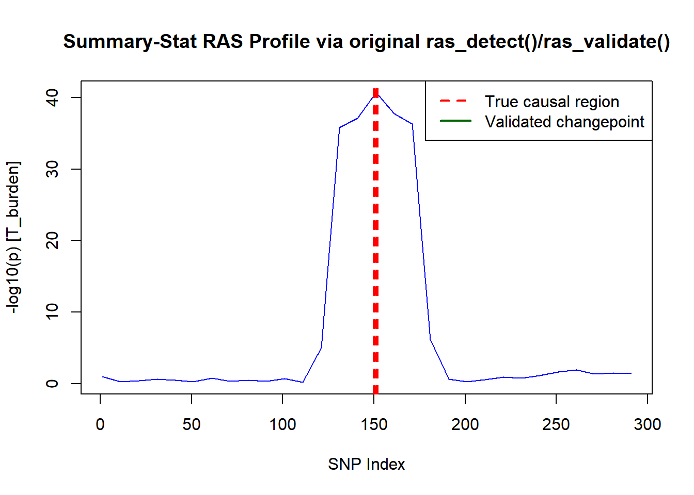

Last updated: 2026-07-15
Checks: 6 1
Knit directory: ras-ss/
This reproducible R Markdown analysis was created with workflowr (version 1.7.2). The Checks tab describes the reproducibility checks that were applied when the results were created. The Past versions tab lists the development history.
The R Markdown is untracked by Git. To know which version of the R
Markdown file created these results, you’ll want to first commit it to
the Git repo. If you’re still working on the analysis, you can ignore
this warning. When you’re finished, you can run
wflow_publish to commit the R Markdown file and build the
HTML.
Great job! The global environment was empty. Objects defined in the global environment can affect the analysis in your R Markdown file in unknown ways. For reproduciblity it’s best to always run the code in an empty environment.
The command set.seed(20260710) was run prior to running
the code in the R Markdown file. Setting a seed ensures that any results
that rely on randomness, e.g. subsampling or permutations, are
reproducible.
Great job! Recording the operating system, R version, and package versions is critical for reproducibility.
Nice! There were no cached chunks for this analysis, so you can be confident that you successfully produced the results during this run.
Great job! Using relative paths to the files within your workflowr project makes it easier to run your code on other machines.
Great! You are using Git for version control. Tracking code development and connecting the code version to the results is critical for reproducibility.
The results in this page were generated with repository version c9bf3c3. See the Past versions tab to see a history of the changes made to the R Markdown and HTML files.
Note that you need to be careful to ensure that all relevant files for
the analysis have been committed to Git prior to generating the results
(you can use wflow_publish or
wflow_git_commit). workflowr only checks the R Markdown
file, but you know if there are other scripts or data files that it
depends on. Below is the status of the Git repository when the results
were generated:
Ignored files:
Ignored: .Rhistory
Ignored: .Rproj.user/
Untracked files:
Untracked: analysis/01_simulation.Rmd
Note that any generated files, e.g. HTML, png, CSS, etc., are not included in this status report because it is ok for generated content to have uncommitted changes.
There are no past versions. Publish this analysis with
wflow_publish() to start tracking its development.
n_snps <- 300 # theoretical chromosome of 300 SNPs
n_disc <- 5000 # external discovery cohort (Method A: independent GWAS)
n_targ <- 5000 # target cohort being scanned
rho <- 0.8 # rho for generating LD matrix
# config for original screen_forward_max_region() func
skip1 <- 10 # pivotal SNP grid spacing
skip2 <- 3 # window half-width step
min_window_size <- 3
max_window_size <- 30
prune_r2 <- 0.2 # LD-pruning threshold
ridge_lambda <- 0.01 # hard coded lambda for now, replace eventually with a shrinkage estimator# genotype simulation
# create LD matrix w/ AR(1), correlation fades further SNPs get
R_true <- outer(1:n_snps, 1:n_snps, function(i, j) rho^abs(i - j))
# generate genotypes from multivariate normal, round to 0/1/2, and clip to [0,2]
sim_genotypes <- function(n, R) {
X <- rmvnorm(n, sigma = R)
X <- round(X)
pmin(pmax(X, 0), 2)
}
# generate data for 10,000 fake ppl
X_reference <- sim_genotypes(10000, R_true)
# measure ACTUAL correlation of 0s, 1s, and 2s
R_empirical <- cor(X_reference)# greedy r^2 < prune_r2 prune of reference LD matrix
# applied before ridge
prune_ld <- function(R, thresh) {
keep <- rep(TRUE, nrow(R))
for (i in seq_len(nrow(R) - 1)) {
if (!keep[i]) next
for (j in (i + 1):nrow(R)) {
if (keep[j] && R[i, j]^2 > thresh) keep[j] <- FALSE
}
}
keep
}
pruned_mask <- prune_ld(R_empirical, prune_r2)# matches compute_gwas_weights(): per-SNP ordinary least squares regression of y on x_j. faster than running lm()
# no covariates simulated here
get_marginal_stats <- function(X, y) {
m <- ncol(X) # number of SNPs
beta <- se <- numeric(m) # store beta and standard error for each SNP
yc <- y - mean(y) # center y to avoid repeated mean calculations
# loop over SNPs to compute beta and standard error
for (j in seq_len(m)) {
xj <- X[, j] - mean(X[, j])
sxx <- sum(xj^2)
b <- sum(xj * yc) / sxx
rss <- sum(yc^2) - b * sum(xj * yc)
se[j] <- sqrt((rss / (length(y) - 2)) / sxx)
beta[j] <- b
}
list(beta = beta, z = beta / se) # return both beta and z-scores
}# implement the t_burden statistic derived in the problem statement / derivation
t_burden <- function(w, Z, R, lam = ridge_lambda) {
Rl <- R + lam * diag(nrow(R))
denom <- sqrt(as.numeric(t(w) %*% Rl %*% w))
if (!is.finite(denom) || denom <= 0) return(0)
as.numeric((t(w) %*% Z) / denom)
}# Summary-stat analog of screen_forward_max_region(), matching its exact grid/window mechanics
# same usage of pivot system so we don't check every SNP
# per-window test statistic is T_burden. min p across windows kept as min(sub.p.values), as in original code
screen_forward_max_region_ss <- function(b_disc, z_targ, R, mask,
skip1, skip2,
min_window_size, max_window_size) {
N <- length(b_disc)
this.seq <- seq(1, N, by = skip1) # set pivots
sub.seq <- c(0, seq(min_window_size, max_window_size, by = skip2)) # set window sizes
if (sub.seq[length(sub.seq)] != max_window_size) {
sub.seq <- c(sub.seq, max_window_size)
}
y_profile <- numeric(length(this.seq))
# loop over pivot SNPs, then over window sizes
for (i in seq_along(this.seq)) {
site <- this.seq[i]
best_p <- 1
# loop over window sizes, compute T_burden and p-value for each, keep best p-value
for (ws in sub.seq) {
if (ws == 0) {
idx <- site
} else {
lo <- max(1, site - ws + 1)
hi <- min(N, site + ws - 1)
idx <- lo:hi
}
idx <- idx[mask[idx]] # drop LD-pruned SNPs from this window
if (length(idx) < 1) next
w <- b_disc[idx]
Z <- z_targ[idx]
Rsub <- R[idx, idx, drop = FALSE]
# calculate significance (t_val and the p_val)
t_val <- t_burden(w, Z, Rsub)
p_val <- 2 * pnorm(-abs(t_val))
best_p <- min(best_p, p_val)
}
# double.xmin is used to avoid taking log of zero, which would be -Inf
y_profile[i] <- -log10(max(best_p, .Machine$double.xmin))
}
# return the summary-stat profile as a list of x (SNP indices) and y (-log10(p) values)
list(x = this.seq, y = y_profile)
}# NOTE: the original ras_scan() averages -log10(p) over num_rep=5. 50/50 splits of ONE pool of individuals. Under Method A (fixed external discovery GWAS + fixed target GWAS) there's no clean summary-stat analog of that resampling. so, this runs only single-pass
run_one_replicate <- function(true_beta) {
X_d <- sim_genotypes(n_disc, R_empirical)
X_t <- sim_genotypes(n_targ, R_empirical)
y_d <- X_d %*% true_beta + rnorm(n_disc, 0, 3)
y_t <- X_t %*% true_beta + rnorm(n_targ, 0, 3)
disc <- get_marginal_stats(X_d, y_d)
targ <- get_marginal_stats(X_t, y_t)
screen_forward_max_region_ss(
b_disc = disc$beta, z_targ = targ$z, R = R_empirical, mask = pruned_mask,
skip1 = skip1, skip2 = skip2,
min_window_size = min_window_size, max_window_size = max_window_size
)
}# "Type I Error Calibration" step from the Validation Plan
# feed the summary-stat profile through the original unmodified ras_detect()/ras_validate()
n_null_sims <- 200 # raise to 500 once runs well
false_positive <- logical(n_null_sims)
null_beta <- rep(0, n_snps)
for (s in seq_len(n_null_sims)) {
# temp: track progress
cat(sprintf("Running simulation %d of %d (%.1f%% complete)...\n",
s, n_null_sims, (s / n_null_sims) * 100), file = stderr())
scan <- run_one_replicate(null_beta)
cp <- ras_detect(
x = scan$x, y = scan$y,
window_size = 100, # down from default 3000 for this simulation
slope_check_window_size = 5
)
val <- ras_validate(
this.result = cp, x = scan$x, y = scan$y,
this.start = 1, this.skip = skip1,
second_window_size = 15, min_signal = 2.5
)
false_positive[s] <- length(val$tau_hats) > 0
}
empirical_type1 <- mean(false_positive)
cat(sprintf("Empirical Type I error over %d null reps: %.3f\n", n_null_sims, empirical_type1))Empirical Type I error over 200 null reps: 0.000# disease signal simulated
signal_beta <- rep(0, n_snps)
signal_beta[c(150, 151, 152)] <- 0.5
# use summary stat workflow
scan_alt <- run_one_replicate(signal_beta)
# run oriignla package algorithms
cp_alt <- ras_detect(x = scan_alt$x, y = scan_alt$y,
window_size = 100, slope_check_window_size = 5)
val_alt <- ras_validate(this.result = cp_alt, x = scan_alt$x, y = scan_alt$y,
this.start = 1, this.skip = skip1,
second_window_size = 15, min_signal = 2.5)
plot(scan_alt$x, scan_alt$y, type = "l", col = "blue",
xlab = "SNP Index", ylab = "-log10(p) [T_burden]",
main = "Summary-Stat RAS Profile via original ras_detect()/ras_validate()")
abline(v = c(150, 151, 152), col = "red", lty = 2, lwd = 2)
if (length(val_alt$tau_hats) > 0) {
abline(v = val_alt$tau_hats, col = "darkgreen", lwd = 2)
}
legend("topright", legend = c("True causal region", "Validated changepoint"),
col = c("red", "darkgreen"), lty = c(2, 1), lwd = 2)
sessionInfo()R version 4.6.0 (2026-04-24 ucrt)
Platform: x86_64-w64-mingw32/x64
Running under: Windows 11 x64 (build 28020)
Matrix products: default
LAPACK version 3.12.1
locale:
[1] LC_COLLATE=Spanish_Latin America.utf8
[2] LC_CTYPE=Spanish_Latin America.utf8
[3] LC_MONETARY=Spanish_Latin America.utf8
[4] LC_NUMERIC=C
[5] LC_TIME=Spanish_Latin America.utf8
time zone: America/Chicago
tzcode source: internal
attached base packages:
[1] stats graphics grDevices utils datasets methods base
other attached packages:
[1] RAS_0.1.12 mvtnorm_1.4-2
loaded via a namespace (and not attached):
[1] jsonlite_2.0.0 compiler_4.6.0 promises_1.5.0 Rcpp_1.1.1-1.1
[5] stringr_1.6.0 git2r_0.36.2 later_1.4.8 jquerylib_0.1.4
[9] splines_4.6.0 yaml_2.3.12 fastmap_1.2.0 lattice_0.22-9
[13] R6_2.6.1 workflowr_1.7.2 knitr_1.51 MASS_7.3-65
[17] tibble_3.3.1 rprojroot_2.1.1 bslib_0.11.0 pillar_1.11.1
[21] rlang_1.2.0 cachem_1.1.0 stringi_1.8.7 httpuv_1.6.17
[25] xfun_0.58 fs_2.1.0 sass_0.4.10 segmented_2.2-1
[29] otel_0.2.0 cli_3.6.6 magrittr_2.0.5 grid_4.6.0
[33] digest_0.6.39 rstudioapi_0.18.0 lifecycle_1.0.5 nlme_3.1-169
[37] vctrs_0.7.3 evaluate_1.0.5 glue_1.8.1 rmarkdown_2.31
[41] tools_4.6.0 pkgconfig_2.0.3 htmltools_0.5.9